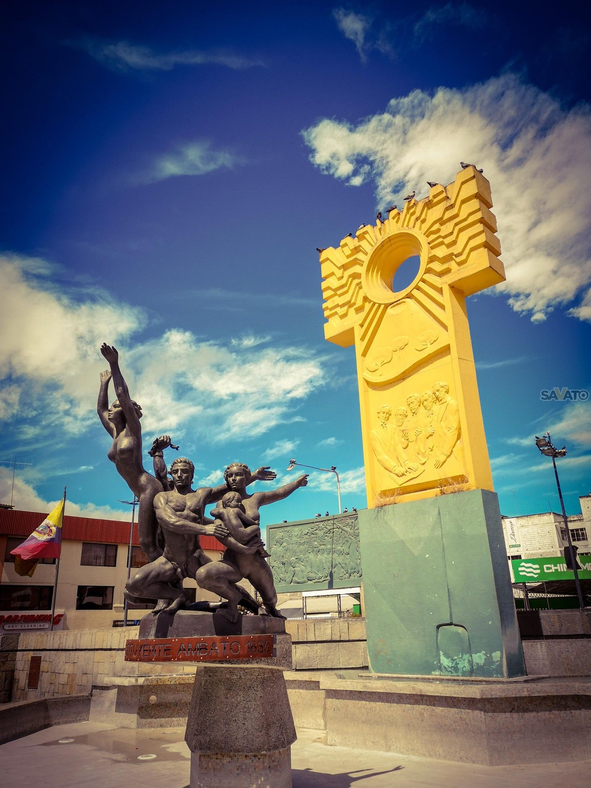

Monumento La Segunda Constituyente
| La segunda constituyente | |
|---|---|
| Este monumento fue construido en el barrio La Merced en 1990 por el escultor lojano Paúl Palacio,cuyo conjunto escultórico representa la filosofía de la convención constituyente de 1835. |  |